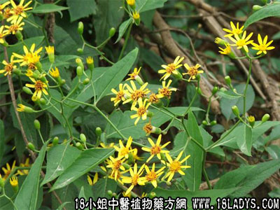

植物名：千里光。
生长环境：本品为多年生草本。旷野，路旁以及阳光充足的溪流边或灌木丛中都很常见，但深山密林中较少。
分布：华南地区的平原常见，此外我国中部、西南各省亦有。
入药部分：全草。
采集期：夏、秋。
自采地点：山岗。
性味：性凉、味淡。
功能：清热解毒。
主治、用量和用法：1、热毒疮疖：生用适量，煎水外洗，或用生叶捣烂，外敷患处；2、烂头：用法同上；3、痔疮，配伍用。
验方：（治痔疮方）九里明、马齿苋、文头萝叶、榕树须、山大刀各等分，清水适量，煎洗肛门。
（方解）湿热坠结于大肠，乃生痔疮。治法重在清大肠湿热。本方九里明、马齿苋、文头萝叶、榕树须均清湿热，山大刀祛风，合为清湿热祛风消肿之剂。熏洗疗法，乃直接作用于肛门患处，收效更快。
（方歌）大肠湿热痔疮成，文头萝叶九里明，山大刀同马齿苋，煎洗肛门疮自平。
本文解释权归中药大全，本文地址：https://www.daquan.com/post/1561.html